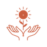

Cultivamos, cosechamos y preparamos nuestras propias hierbas, tinturas y recetas en Arizona, Atlántida. Un proyecto claretiano donde cuerpo, mente y alma vuelven al equilibrio — sin promesas, con propósito.

Producción propiaLa mayor parte de las plantas y hierbas que usamos en nuestras tinturas, jarabes, cápsulas y tés salen de nuestro propio cultivo. Recetas heredadas de la tradición claretiana, manos de la casa, agua de la región.
Inspirados en la misión claretiana. Cuidamos cuerpo, mente y espíritu con materia simple y sabiduría antigua — sin promesas, con propósito.
Hablamos como hermanos. Con confianza, atención y sin tecnicismos clínicos.
Heredera de la tradición claretiana. Cuidamos cuerpo, mente y espíritu, en libertad.
La planta, la mano, el agua. Materia simple y sabiduría que viene de la tierra.
Examen bioenergético. Movimiento, frecuencia y equilibrio en cada visita.
"Un hijo del Corazón de María es un hombre que arde en caridad y que abrasa por donde pasa."
Cada visita empieza con escucha y termina con un plan claro de lo que el cuerpo necesita. Acompañamos a tu ritmo.
Una lectura del cuerpo para entender qué pide. Conversación, evaluación y plan de acompañamiento.
Hierbas medicinales preparadas en la casa, usadas como apoyo dentro del acompañamiento.
Extractos en alcohol e infusiones siguiendo recetas heredadas y la sabiduría local.
Un espacio tranquilo de conversación. Acompañamos con oración cuando la persona lo pide.
Sembramos, cosechamos y preparamos. La mayor parte de las plantas y hierbas que ves acá las producimos nosotros mismos en la casa, siguiendo recetas heredadas de la tradición claretiana. Acá te mostramos algunas de las más solicitadas; la selección final se ajusta a cada persona en la consulta.
Preparación líquida tradicional. La presentación más solicitada en la casa.
Mezcla en polvo de elaboración propia, en presentación de una libra.
Tintura tradicional de la sangre de drago, árbol presente en la región.
Gotero elaborado en la casa a partir de pasiflora, flor del campo hondureño.
Mezcla de hierbas pensada para acompañar a la mujer en distintos momentos.
Preparación de boldo con clorofila de menta. Sabor fresco y aromático.
Hierba tradicional latinoamericana, presentación lista para infusión.
Cereal de elaboración propia. Una de las presentaciones más solicitadas.
Cápsulas que combinan dos ingredientes de uso ancestral en herbolaria.
Sábila (Aloe vera) preparada como jarabe artesanal de la casa.
Especia aromática preparada como té. Sabor dulce y cálido.
Hoja tradicional sudamericana, presentación lista para infusión.
Palabras compartidas con permiso, sin promesas y sin diagnósticos.
Vine cansada y con prisa. Salí más despacio, escuchándome. Eso ya fue un regalo.
Lo que más me marcó fue la escucha. Nadie había preguntado tan despacio cómo estaba durmiendo.
Llegué con dudas. Me explicaron sin prometer nada. Eso me dio confianza para volver.
En Arizona, Atlántida. Sin prisa, sin sala de espera fría — una casa de verdad.
Escribinos por WhatsApp. Te contamos qué llevar, cuánto dura el examen y cómo llegar a la casa.